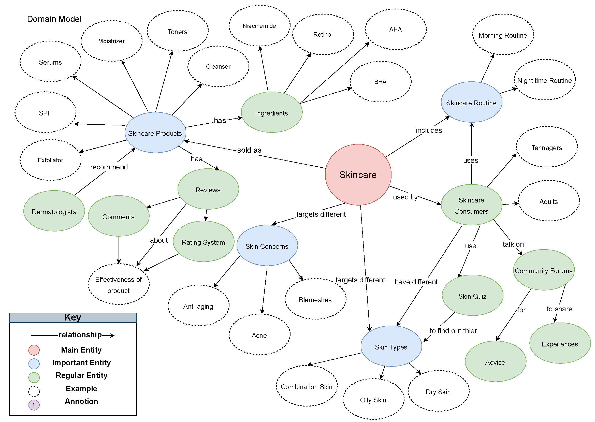

Information Architecture: Skincare Website
A full IA project for a skincare e-commerce and community platform, from domain research and card sorting to sitemap, user journey, and annotated wireframes for four key page types.
Overview
This project asked me to design the information architecture for a skincare website aimed at young adults with acne, starting from scratch. Rather than jumping straight into structure, I started with research to understand the domain, the users, and how existing skincare websites organise their content. The deliverables spanned the full IA process.
Domain model
To understand the skincare domain, I interviewed three domain experts and analysed four competitor skincare websites and blogs. The goal was to map out the key entities, relationships, and vocabulary before touching any structure.
The domain model centred on Skincare as the main entity, with three important clusters branching from it: Skincare Products (with their ingredients, product types, and reviews), Skincare Consumers (defined by skin type, skin concern, and routine), and Skincare Routines (morning and night-time). Dermatologists and community forums emerged as secondary actors that feed into how consumers find and evaluate products.
Skin concerns, particularly acne, blemishes, and anti-aging, were the dominant way users described their relationship to products. This suggested that skin concern should be a primary navigation axis, not just a filter.

Sitemap
I reviewed terminology across several skincare websites from my interviews and used the most commonly understood labels to design an open card sorting exercise on OptimalWorkshop with five participants. This helped me validate labels and group structures before building the sitemap.
The resulting sitemap organises the site into seven top-level sections: Skin 101 (education), Shop Skincare, Skin Quiz, Routine Builder, Skin Talk (community forum), Blog, and User Profile. The Shop Skincare section uses faceted navigation, allowing users to filter by product type, brand, key ingredients, skin type, skin concerns, SPF content, price range, and average reviews.
Including a dedicated Routine Builder and Skin Quiz in the global nav, rather than burying them as features, reflects how users in interviews described their main goals: understanding their skin type and building a routine, not just browsing products.

User journey
For the user journey, I chose the task: find a chemical exfoliator for acne from The Ordinary, then save it to favourites. I selected this task because it exercises global navigation, filtered search, and the user account system in a single flow, giving a meaningful end-to-end view of how the IA performs under real use.
The journey maps the path from the home page through the Shop Skincare section, applying filters, landing on a product page, and saving it via the favourites icon. Decision points around search versus browsed navigation are captured as branches in the flow.

Wireframes
Each wireframe was designed to reflect a specific research finding. All pages include a persistent breadcrumb trail and a global search bar, since users in interviews often searched by ingredient or brand name rather than browsing category trees.

Vertical left-hand navigation for scanning articles. Auto-generated related products and blog recommendations. Pagination with "Next page" labels so users know what's coming.

Faceted left-side navigation. Active filters shown as pills above results with individual clear options. Sort by popularity, price, and rating.

Review section prioritised, since interviews showed users always read reviews before buying. Star rating breakdown, sort by Most Helpful, and "Other Customers Also Bought" recommendations.

Search-first design based on how users described using platforms like Reddit, browsing by keyword, not category. Search by thread, tag, member name, or date range.
What I learned
The card sort directly changed my sitemap. My initial instinct was to organise products by category (moisturisers, serums, etc.), but participants consistently grouped by skin concern first. This shifted "Shop by Skin Concern" from a secondary filter to a top-level navigation option.
Competitor analysis showed that "Skin Talk," "Community," and "Forums" all describe the same thing, but users in the card sort recognised "Skin Talk" as more specific and welcoming for a skincare audience. Labels carry tone, not just meaning.
Faceted navigation solves findability: users who know what they want can drill down fast. But the Skin Quiz and Routine Builder address discoverability for users who don't yet know what they need. Having both in global nav was a deliberate choice to serve both mental models.
Every participant in the consumer interviews mentioned checking reviews before buying. This made the review section on the product page a primary content area, not an afterthought, with multiple sort options, a rating breakdown, and a helpful/not helpful voting system.